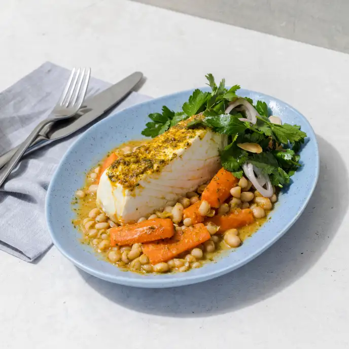

Chermoula

Description
Moroccan dressing
Ingredients
- 2 1/4 C fresh cilantro leaves
- 8 garlic cloves
- 1 1/2 tsp ground cumin
- 1 1/2 tsp paprika
- 1/2 tsp cayenne pepper
- 1/2 tsp sea salt
- 6 Tbs lemon juice (2 lemons)
- 3/4 C extra-virgin olive oil
Steps
-
Pulse cilantro, garlic, cumin, paprika, cayenne, and salt in blender
until chopped. ~ 10 pulses.
- Add lemon juice and pulse to combine.
- Transfer to a medium bowl and slowly whisk in oil.
- Cover and let sut 30 min to mix.